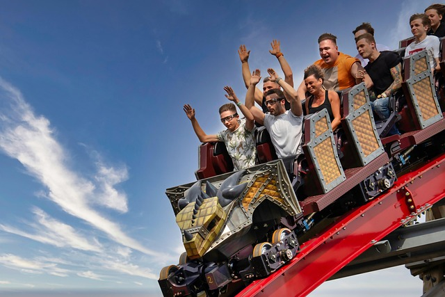
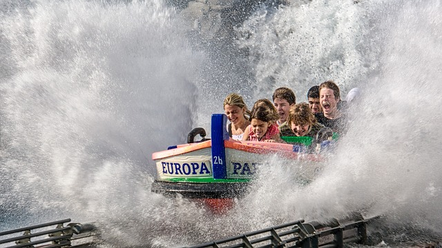
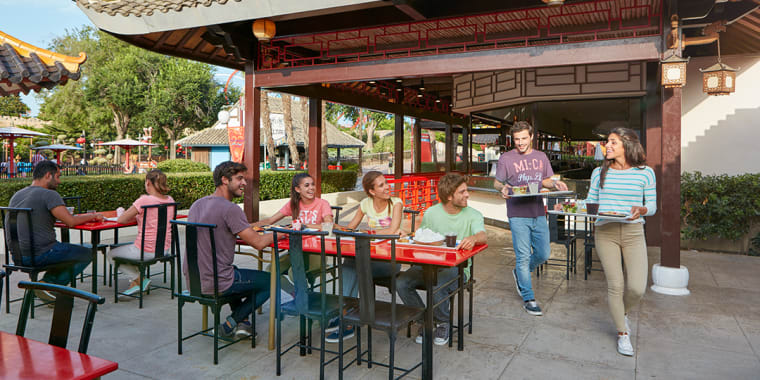
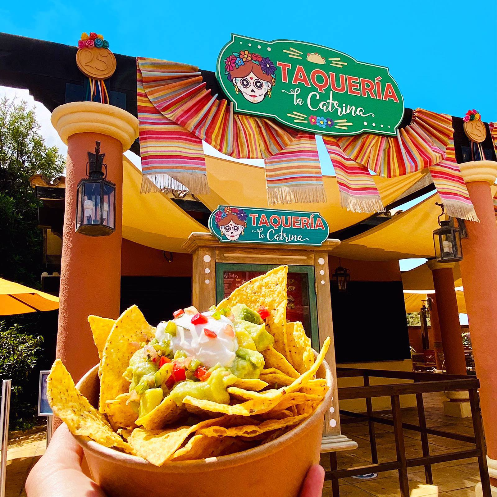

Atracciones
Montaña rusa
En la imagen se observa una montaña rusa en pleno descenso, repleta de personas que experimentan una mezcla de emoción y adrenalina. Los rostros reflejan distintas emociones: algunos gritan con entusiasmo, otros levantan los brazos disfrutando la velocidad, mientras unos pocos se aferran al asiento con fuerza. El vagón tiene un diseño temático que recuerda a una criatura mitológica, con detalles dorados y metálicos que realzan su apariencia imponente. El cielo despejado y azul, con nubes delgadas extendiéndose en el horizonte, enmarca la escena, intensificando la sensación de altura y libertad que ofrece esta vertiginosa atracción.
Restricciones
- Estatura mínima:1.5m
- Edad mínima:13 años
Grand Canyon Rapids.
En la imagen se aprecia un momento lleno de emoción y frescura en una atracción acuática del parque Atlan City. Un grupo de personas viaja en una embarcación que acaba de impactar contra el agua, generando una enorme salpicadura que los envuelve casi por completo. Las expresiones faciales varían entre gritos, risas y sorpresa, mientras se sujetan con fuerza ante la intensa ola que los empapa. El agua salta en todas direcciones creando un espectáculo visual impresionante, que transmite la fuerza del impacto y la diversión del momento. La escena refleja a la perfección la adrenalina y alegría propias de una aventura en un parque de diversiones.
Restricciones
- Estatura mínima:1 m.
- Edad mínima:5 años. Pero siempre acompañado por un adulto a no ser que tenga los 9 años.
Hurakan Condor.
En la imagen se observa una torre de caída libre en un parque de diversiones, capturada en su punto más alto justo antes del descenso. La estructura se alza imponente contra un cielo completamente despejado, intensificando la sensación de vértigo. En la cima, un grupo de personas permanece suspendido en el aire, con los pies colgando y las emociones a flor de piel mientras se preparan para la inminente caída. La plataforma triangular en la parte superior refuerza la altura extrema de la atracción, y la tensión del momento se percibe claramente: es ese breve instante de silencio antes de que la adrenalina estalle en un vertiginoso descenso a toda velocidad.
Restricciones
- Estatura mínima:1.5 m.
- Edad mínima:13 años
Comida y Restaurantes
Shichuan
Este restaurante al aire libre ofrece una deliciosa variedad de platillos de inspiración asiática, servidos en un ambiente relajado y familiar. En sus bandejas se pueden ver opciones como arroz frito, fideos salteados, pollo agridulce y rollitos primavera, ideales para compartir entre amigos o disfrutar en pareja. Con mesas al aire libre y decoración de estilo oriental, es el lugar perfecto para saborear comida sabrosa y rápida mientras se disfruta del entorno.
Taqueria La Catrina
La Taquería La Catrina ofrece auténticos sabores mexicanos en un ambiente colorido y festivo. Entre sus especialidades destacan los nachos crujientes coronados con guacamole fresco, crema, y trocitos de jitomate y chile, perfectos para abrir el apetito. El local, decorado con detalles tradicionales y un toque alegre, invita a disfrutar de antojitos típicos como tacos, quesadillas y más, ideales para quienes buscan una experiencia culinaria llena de sabor y tradición.
Horarios del parque y atracciones
| Días | Horas | ||
|---|---|---|---|
| General* | Específico** | Restaurantes*** | |
| Lunes-Viernes | 10.00-21.30 | 11.00-20.00 | 10.30-20.30 |
| Sábados | 09.00-22.30 | 10.00-21.30 | 9.30-22.00 |
| Domingos | 09.00-22.00 | 10.00-21.00 | 9.30-21-30 |
*Horario General del parque.
**Horarios específicos de las atracciones principales.
***Horarios de los restaurantes o zonas de comida.
¿Alguna duda? Escríbenos y te la resolvemos!
Preguntas frecuentes
¿Que es Parque Atlan Cityt?
Es un parque temático de atracciones, también tenemos una sección con atracciones acuáticas. Dentro de nuestras intalaciones también disponemos de diferentes secciones con restaurantes con diferentes tipos de comida. Menus para gente con intolerancias, vegetariana y vegana.
Requisitos para subir a las atracciones
- En todas las atracciones puedes entrar siempre que cumplas algunas de las siguientes características: tener 1.5m de altura o tener entre 13-15 años dependediendo de la atracción. En la entrada de cada atracción se detalla los requisitos.
- En la atracciones de zona infantil podrán entrar todo el público siempre acompañado de un adulto lo niños de edades comprendidas 7-5 años.
- La entrada a las diferentes atracciones está prohibida para menores de 4 años.
¿Dudas con el horario?
Parque Atlan City abre todos los días de lunes a Domingo. Incluídos festivos. Para más información Ir a Horarios